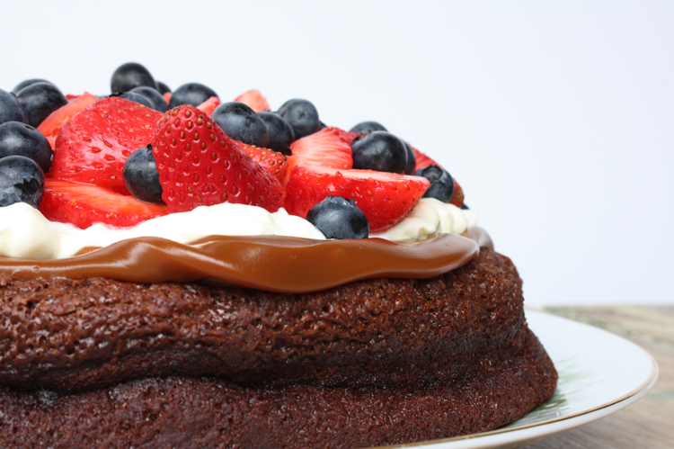
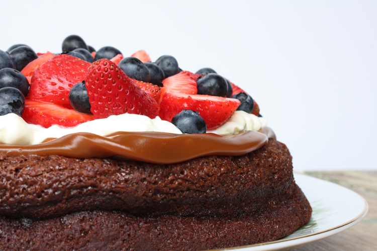

Ingredientes
- 250 gr. de chocolate semiamargo.
- 200 gr. de manteca.
- 4 huevos.
- 3 cdas. de harina leudante.
- 600 gr. de dulce de leche.
- 100 gr. de crema de leche.
- 4 cdas. de azúcar impalpable.
Preparación
- Disolver a "baño María", o en el microondas, el chocolate junto con la manteca.
- Retirar, dejar templar y añadirle los huevos, ligeramente batidos.
- Incorporar y agregar la harina leudante (se puede evitar, para convertirlo en un postre sin T.A.C.C.)
- Enmantecar y enharinar un molde (22cm. aprox.), volcar la preparación y llevar a horno moderado (hasta que comiencen a despegarse los bordes).
- Retirar, dejar enfriar y desmoldar.
- Para la crema Chantilly, batir la crema de leche con el azúcar impalpable y escencia de vainilla.
- Armar: cubrir la torta con dulce de leche y la crema Chantilly. Decorar con chocolate rallado o frutos rojos.